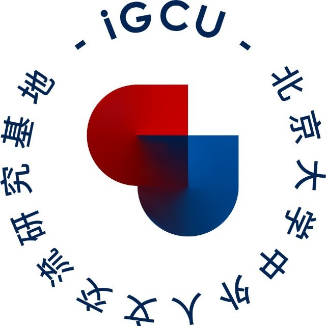

收录于合集
以下文章来源于北京大学中外人文交流研究基地 ，作者iGCU
 北京大学中外人文交流研究基地 .
沟通人文，理解世界。 北京大学中外人文交流研究基地（iGCU）由教育部批准设立，服务十大中外高级别人文交流机制，旨在建设具有重要国际影响的一流中国特色新型智库、科研机构、高端交流平台和人才培养中心。
小 i 导 读
11月5日下午，北京大学国际关系学院第一期“洞明书屋”新书交流会在学院图书馆洞明讨论室举行。 北京大学国际关系学院院长、教授唐士其 作为主讲嘉宾，与同学们交流研讨他的新著 《理性主义的政治学：流变、困境与超越》 。以下为本次交流会的采访视频及图文回顾，与读者们分享。 文末有彩蛋哦~
本文约 1880 字，读完约 5 分钟
精彩访谈
11月5日下午，北京大学国际关系学院第一期“洞明书屋”新书交流会在学院图书馆洞明讨论室举行。此次活动主题为“唐士其与《理性主义的政治学：流变、困境与超越》”， 北京大学国际关系学院院长、教授唐士其 作为主讲嘉宾，与同学们交流研讨他的新著《理性主义的政治学：流变、困境与超越》。 活动由北京大学国际关系学院团委、北京大学中外人文交流研究基地联合主办，基地执行主任、国关学院教授王栋，院党委副书记祝诣博，院团委副书记程环宇出席交流会，活动由学院院长助理、团委书记张昕扬主持。 参与交流的除十余名国际关系学院同学外，还有来自元培学院、数学科学学院的同学。
活动现场
王栋教授在发言中指出，“书不在厚，有思则明”，唐士其教授的新作《理性主义的政治学：流变、困境与超越》博古通今、贯通中外。 从古希腊理性到近代西方理性主义，从中西理性主义比较到现代理性主义困境，最终落脚在如何通过中西交流汇通，创造一种新的世界观和方法论的问题，体现了唐士其教授作为中国学者高度的文化自觉意识。
王栋教授致辞
唐士其教授在座谈交流中巧借活动主题“洞明”一词对理性主义进行阐述。 他认为理性主义的含义中就包括一个人洞明的能力，“世间洞明皆学问”，事物的本质就是人们需要去洞明的，进而谈到了理性主义对于西方政治哲学的影响。 之后他梳理了中西方哲学思想的起源、特点与优势，比较了不同时期、不同流派的哲学思想，与同学们讨论了在政治哲学问题中，中西方学术理论的差异和特点，列举了古今中外哲学名家们的学术观点、理论价值以及对于当下的影响。 他表示，在《理性主义的政治学：流变、困境与超越》一书中，他通过中西哲学思想和政治制度、政治实践的比较，旨在探讨一种通过两套思想体系的交流汇通，创造新的思想方式的可能。
唐士其教授作专著报告
在听了唐士其教授的深度介绍后，同学们的思维也活跃起来，积极向唐士其教授进行提问。 同学们针对中西方的本质思维和多元思维、如何融合中西两种思维模式、理性认识发生错误时会产生错误指导、社会科学能否进行预测研究等问题与教授进行深入探讨。 唐士其教授融贯中西、通释古今、深入浅出地为同学们进行解答，还以当下新词“内卷”（点击链接查看往期文章：刘世定、邱泽奇老师深度辨析“内卷”的概念）、“躺平”、“降维竞争”来进行生动的阐释，在场同学都听得津津有味。
“
同学现场提问
活动最后，唐士其教授签名赠书，全体参会人员合影留念，与会同学在此次交流会中关于理性主义的政治学获得全新体会与感悟，同学们阅读经典书籍的热情、探索新知的好奇心也得到激发。
唐士其教授签名赠书
全体合影
《理性主义的政治学：流变、困境与超越》
延伸阅读

“洞明书屋”是什么？
“洞明书屋”系列活动融合了学院团委学术科创部“悦读会”与北京大学中外人文交流研究基地“学者新书”两大品牌活动，并在此前基础上推陈出新。“洞明书屋”系列活动定期于学院图书馆洞明讨论室举办，旨在融合学科特色与思政教育，借助温馨的师生交流氛围，丰富学生专业知识，提升学生人文交流素养，展现当代国际政治学者风范，继承和发扬学院优良的学术文化传统。

“洞明书屋”在哪里？
洞明讨论室坐落于北京大学国际关系学院图书馆，由广东玉腾教育投资有限公司集团于2018年捐资修葺一新，致力于营造学院良好学术氛围，为师生打造研讨与交流的学术空间。
小 i 有 礼
**欢迎关注我们并进入公众号后台留言
**
你对唐士其教授本人或是本书的印象与期待
或你对《理性主义的政治学：流变、困境与超越》的兴趣感言与问题探究
留言就有机会获得
由唐士其教授亲笔签名的
《理性主义的政治学：流变、困境与超越》
一书哦！
快关注我们并留言吧~
撰稿：张小弛
摄影：谢锦伟
文章排版：苗小鑫
视频剪辑：苗小鑫、李嘉馨
校对：张梦晨